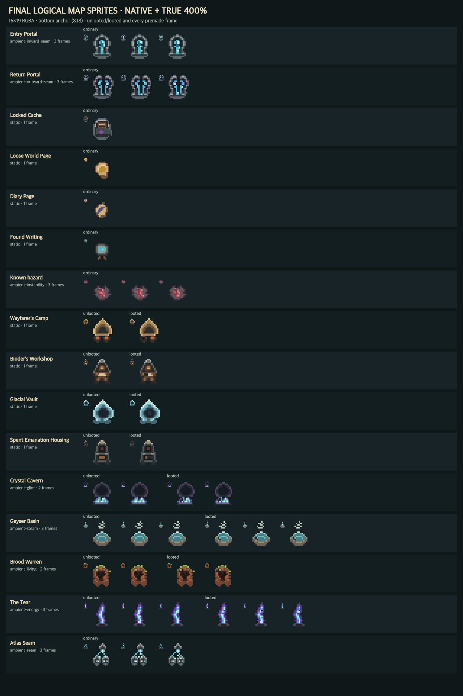
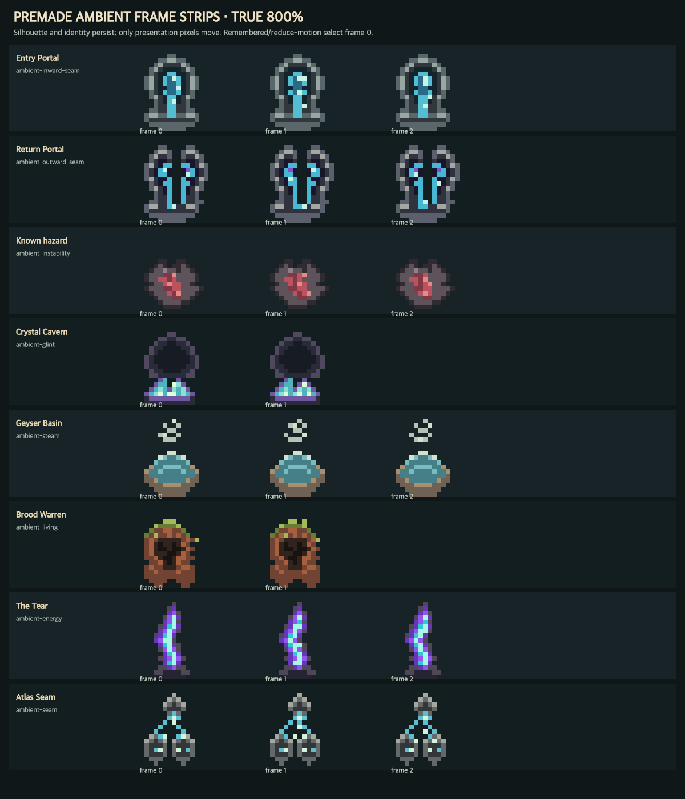
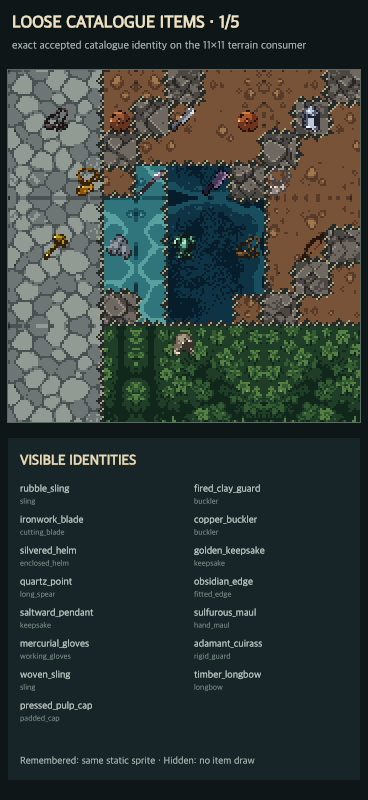
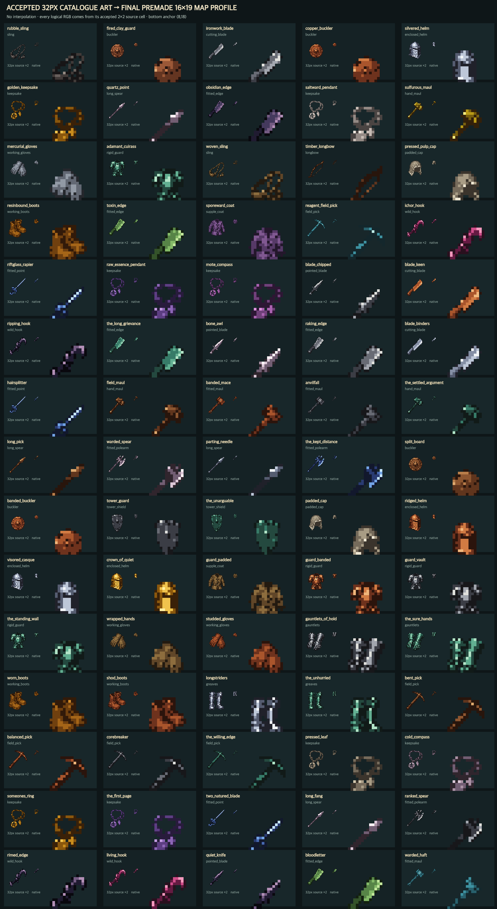
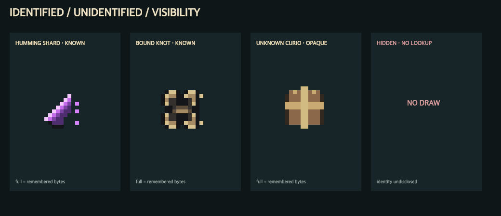

Exploration Map Final Art Program
This route consolidates the complete currently nonblocked exploration-symbol replacement work without merging its three runtime packs. Every shown identity is a complete premade PNG selected by a stable key. Ambient frames exist only for identities whose current presentation truthfully supports motion; all loose physical items remain static.
1 · Hazards, sites, portals, caches, and writings
The held first pack covers the generic placed hazard; all nine live sites; entry and exit portal identities; locked cache; loose World Page; diary page; found writing; truthful unlooted/looted states; and category-safe minimap sprites.




Premade minimap category replacements
Portal, page, site, resource, item, cache, and hazard use closed category-safe sprites. The resource glyph is the exact accepted resource-sprites-v1 minimap grammar baked into the first pack; no catalogue or subtype detail is disclosed.
Aimee review index · current symbol → premade replacement
Animated map identities
Entry portal 3 · return portal 3 · hazard 3 · Crystal Cavern 2/state · Geyser Basin 3/state · Brood Warren 2/state · The Tear 3/state · Atlas Seam 3. Only current full visibility advances; remembered uses frame 0.
Static map identities
Locked cache · loose World Page · diary page · found writing · four static sites with truthful unlooted/looted variants · every one of the 102 current catalogue items.
Premade minimap categories
Portal · page · site · resource · item · cache · hazard. Each is category-only; none leaks SiteID, ResourceID, catalogue ID, quantity, or live remote state.
Existing accepted non-symbol art
Resource nodes/wild drops retain resource-sprites-v1; terrain, flora, walls, fog, party/selection/cues, and alerts retain their existing owners.
2 · All 75 accepted-source gear identities
Every catalogue gear ID backed by accepted mob-gear-sprites-v1 art has a complete premade 16×19 map profile. These are static physical objects and inherit the generic item minimap marker.




3 · Remaining 27 catalogue objects
Five treasures, two curios, eighteen consumables, and two keys complete the current item catalogue. Known curios retain their exact identities; unknown curios use the already accepted opaque parcel rather than leaking subtype.



Truthful final-art blockers
Named travellers
named-character-placeholders-v1 explicitly declares finalArt:false. It cannot be promoted as final exploration art.
Creatures, encounters, and apex
The current trait renderer is a placeholder and final creature art remains outstanding. Bespoke species sprites would contradict the settled generic trait-renderer direction.
Binder and Quill
No accepted persisted appearance model exists. The noncanonical proof templates are expressly forbidden as runtime adapter fallbacks.
Accepted terrain, resources, flora, party/selection/alert overlays, walls, and fog retain their existing owners and are not duplicated by these packs.